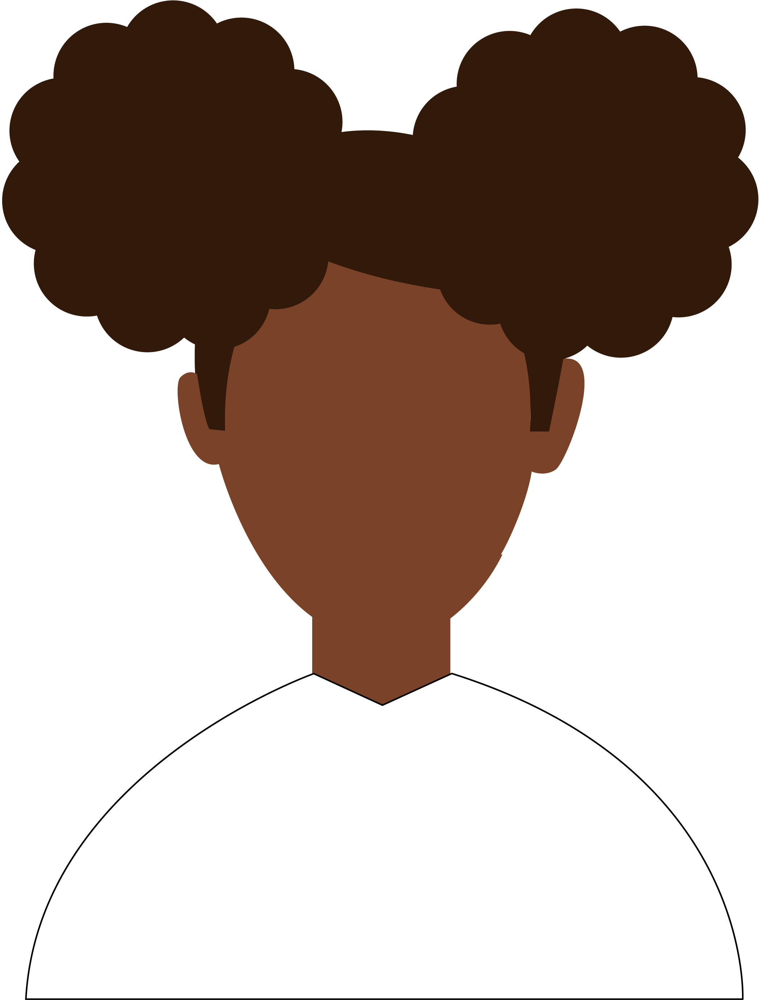
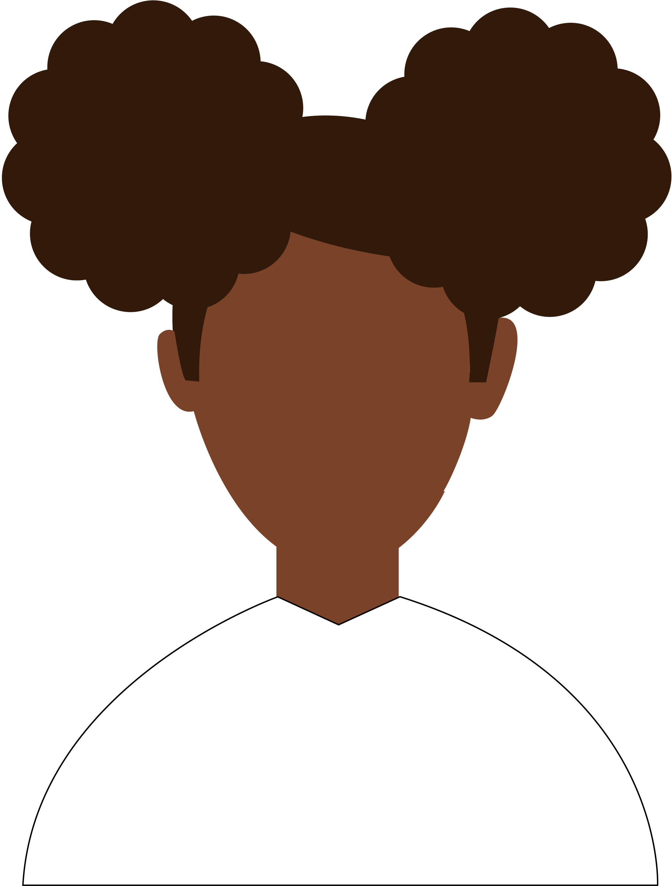

Welcome!
You're Probably wondering who this is.
Well! I’m Faith Carter, a 10th-grade digital design major at Cab Calloway School of the Arts. I love creating graphics, animations, and exploring digital media. I’ve been learning a lot about design software like Adobe InDesign and Illustrator, and I enjoy working on personal projects in my free time.
I’m excited to keep developing my skills and hope to turn my passion for design into a career.
My improvements and Acheivements:
- I won the Delaware Tennis Smash Award as a Junior Tennis coach for Rodney Street and Tennis Rocks.
- I was awarded the USTA Middle States Delaware Junior Tennis Service Award.
- Honor Roll Student
- I’ve won matches as a Junior Tennis Coach at Dupont Country Club, Wilmington Country Club, and VicMead Country Club.